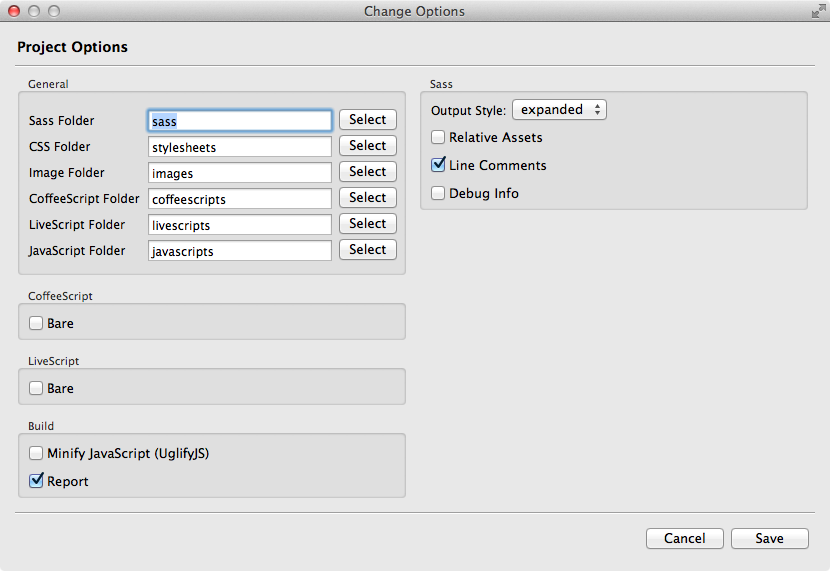

Options 設定
當 Fire.app 正在 Watch 某個專案時，選單中會有 "Change Options" 的選項，點選後會跳出設定視窗如下：
設定視窗中分成五個部分：
General
此部份用來設定各個預設資料夾的名稱，如果有預設的資料夾名稱不符所需，可以在此更改。
CoffeeScript
勾選 "Bare" 時會變更 Compile 的方式，請參考 CoffeeScript Usage 和 CoffeeScript - Lexical scope 。
LiveScript
勾選 "Bare" 時會變更 Compile 的方式，請參考 LiveScript Usage 。
Build
可以選擇是否要將 JavaScript Minify（使用 UglifyJS ）；亦可選擇在 Build Project 時是否出現 Report 視窗。
Sass
- Output Style： 在選單中可以選擇 Sass 檔案輸出成 CSS 檔案時使用的格式。
- Relative Assets： 使用 compass image-url() 相關 helper 且需要以相對連結輸出 Compile 結果時勾選。
- Line Comments： 選擇是否在輸出的 CSS 中加上標示來源 Sass 行數的註解。
- Debug info： 選擇是否在輸出的 CSS 中加上供除錯用的訊息註解。